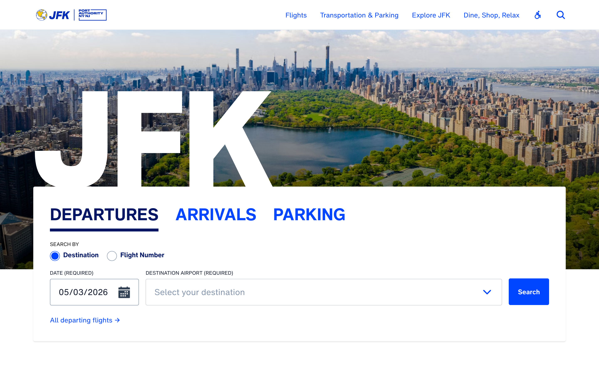
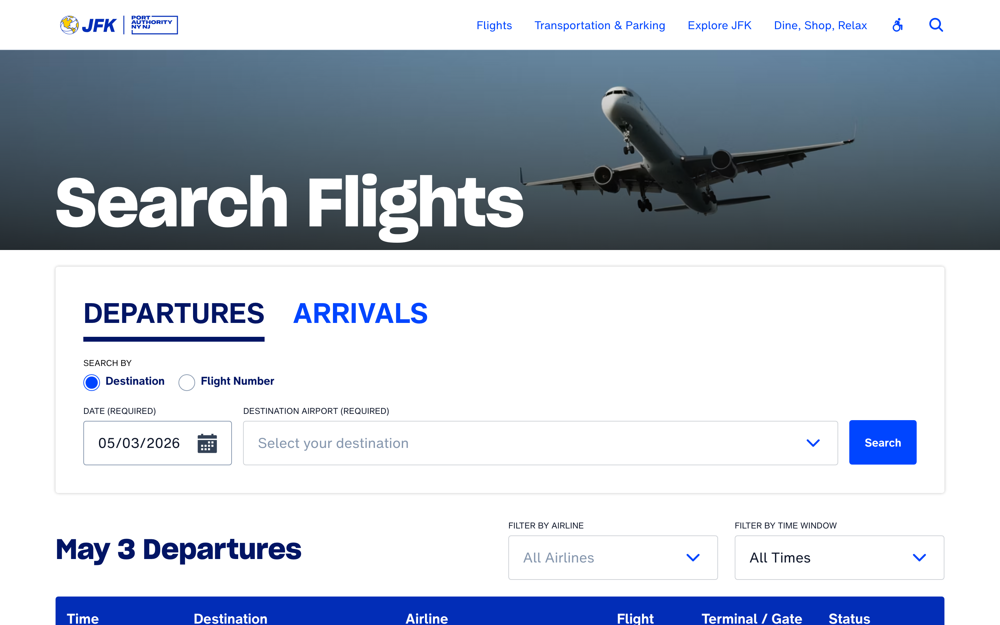
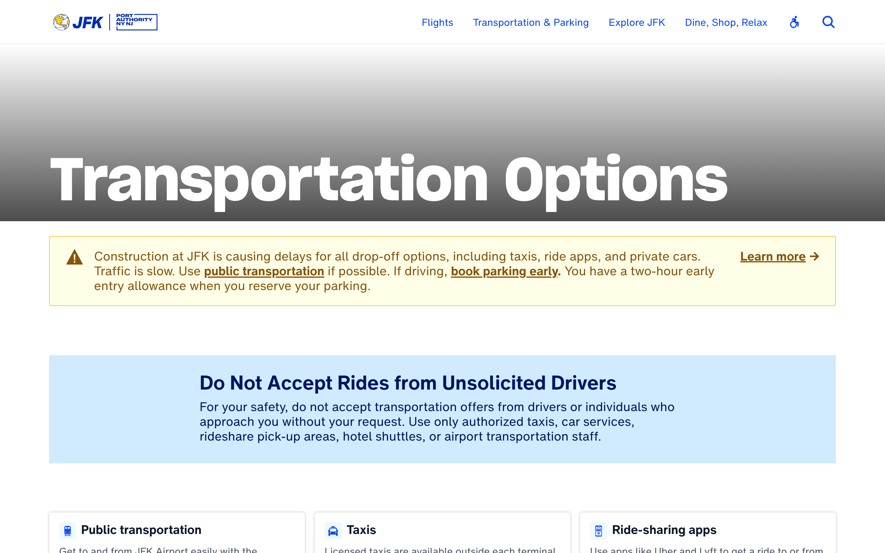
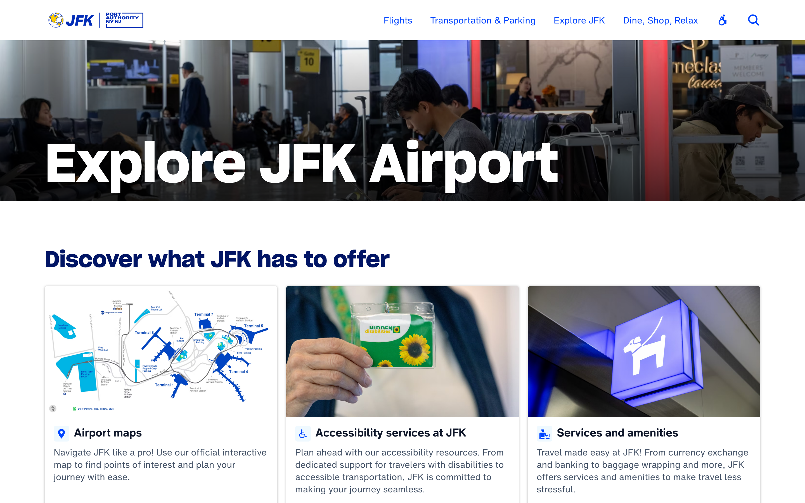
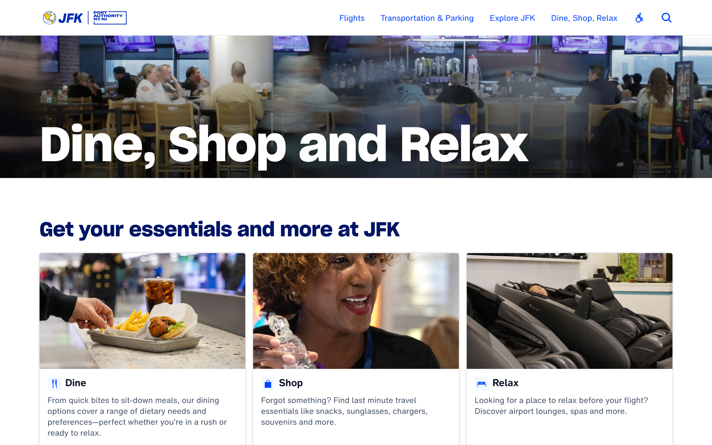

A descriptive snapshot of the existing JFK Airport website, captured for redesign work. This page renders in the brand's own captured tokens — Sharp Grotesk display, Helvetica Now body, the PANYNJ blue family, and the architectural 2px radii — so misreads are visible at a glance.
--cap 25 or higher.





Single dominant brand hue (panynj-blue #0045FF) carries every interactive cue. Three near-white grounds for section alternation. Yellow is reserved for warnings; green for success. 11 distinct values total.
Two custom-licensed type families anchor the brand. Sharp Grotesk Semibold (Lucas Sharp / Sharp Type) for display — the same family used across editorial-grade brands like Adobe and several Pentagram clients. Helvetica Now for PANYNJ (Monotype, private cut) for body. The display family is reserved for h1/h2 only; h3 and below switch to body.
2px radius · 12/24 padding · 16px Helvetica Now bold · panynj-blue fill / white text. Secondary is text-only blue link.
Hero headlines: "JFK", "Search Flights", "Transportation Options", "Explore JFK Airport", "Dine, Shop and Relax" — declarative, owner-of-record, no marketing flourish.
Section heads mix institutional ("Welcome to John F. Kennedy International Airport") with practical ("Find your way to and from the airport") and announcement ("An entirely new $19B JFK is being constructed"). Construction context is acknowledged head-on.
CTAs are dutifully descriptive — "Find taxi rates, locations, and rider tips" — rather than urgent or punchy. Tone: civic-institutional. PANYNJ as the steward of the gateway, not a brand selling an experience.
9 of 10 sampled hero/card images on the home page have empty alt attributes — including editorial portraits in the IA cards and the full-bleed Manhattan skyline hero. The logo carries descriptive alt; nothing else does. Cosmetic-vs-informational distinction is not being made.
panynj-blue #0045FF appears 211 times across the sample, used identically for plain link text, primary CTAs, active tabs, headline accents, and discoverability cues. When one color carries every interactive signal, hierarchy collapses and the user can't distinguish "navigate" from "submit" at a glance. Risk amplifies on the busier IA pillar pages with many sibling links.
Editorial card images are served at 1080×1440 intrinsic but rendered at 312×416 — roughly 12× oversampled by area. Likely real perf cost on mobile and a contributor to "feels heavy" perception. The CMS is not delivering a srcset that matches the rendered size.
The 320px Sharp Grotesk hero is exceptional and signals real brand investment. The very next viewport collapses to a conventional 16/20px Helvetica Now body grid that any 2019 municipal site could produce. The page reads "the brand was hired for the wordmark, the template was reused for the rest" — the type investment is being under-cashed below the fold.
All five IA pillar pages use the same composition: full-bleed photo hero → "Welcome / Discover / Get / Find" h2 → 3-column icon-card grid → cross-promo → footer. The skeleton is identical, only the photo and copy change. This is the canonical 2017–2020 municipal-modernism template. Recognisable as a template, not as JFK.
The home page tries to serve a panicked late traveller, a relaxed early arrival, a pickup driver during construction, an institutional researcher, and a dwell-time visitor — all on the same first viewport. The flight-search module assumes "departing or arriving"; the pickup-driver crisis (the construction reality) is buried in the transportation page rather than surfaced as a first-viewport affordance. Audience routing is implicit, not explicit.
Airports are anxiety-inducing places (security wait, gate-changes, missed pickups). The site's voice is uniformly procedural — "Welcome to John F. Kennedy International Airport," "Transportation Options," "Get your essentials and more at JFK." There is no acknowledgment of traveller emotion, no warmth, no New York flavour. Compare with Singapore Changi (theatrical) or Heathrow (concierge-tonal).